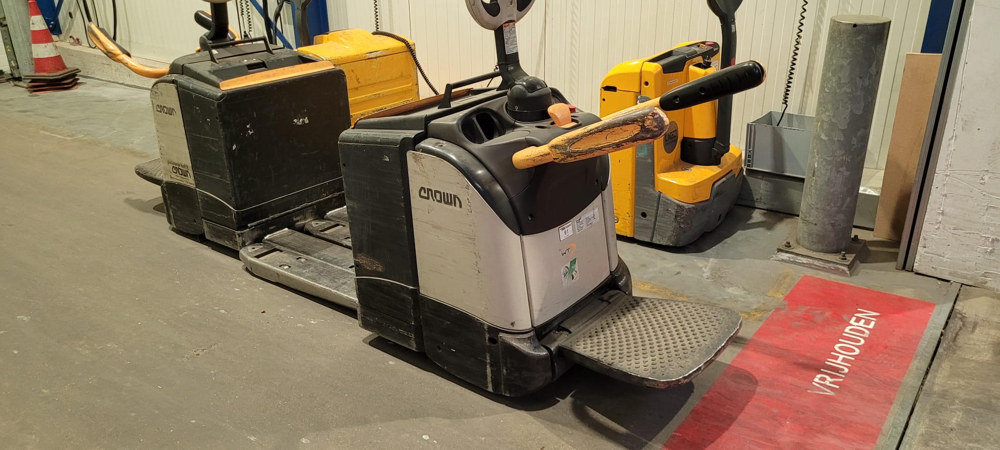

Ik ben Mike Masteling, 18 jaar oud. Op dit moment werk ik fulltime in de logistiek. In mijn vrije tijd ga ik graag naar de gym, ik ben hier 5x in de week te vinden. Ik wil wil weer naar school toe om door te groeien en een nieuwe uitdaging te vinden. Het lijkt mij leuk om dit te doen in de ICT. Ik heb best lang getwijfeld over wat ik wilde gaan doen. De twijfel lag tussen iets in de ICT, Logistiek en Finance. In maart heb ik een opendag bezocht op het ROC Mondriaan in Delft. Hier ben ik erachter gekomen dat het iets in de ICT moest worden, omdat mij dit het leukste lijkt. Ik heb zelf al wat kennis over html en css. Dit omdat ik graag wilden gaan ondernemen en hier een website voor nodig had. De website is goed gelukt en zag er netjes uit, maar ik heb verder niks gedaan met het ondernemen. Ook heb ik zelf mijn pc gebouwd.
Ik werk nu 36 tot 40 uur in de week bij Dobbe Transport. Ik ben voornamelijk bezig met het laden en lossen van vrachtwagens. Dit doe ik het meeste met een elektrische pompwagen (zie foto). We laden en lossen van alles. De meeste spullen staan op pallets maar we krijgen ook wel eens wat anders. Van europallets to pallets van 4 meter lang. Verder rijd ik veel op heftrucks om spullen op en af te stapelen. Als er spullen in de stelling moeten doe ik dit met een reachtruck. Doordeweeks werk ik van 14.00 tot 20.00 en op zaterdag van 7.00 tot 13.00. Ik heb ook even meegelopen bij de planning. Die regelen dat alle spullen zo effiecient mogelijk op de juiste plek komen. Ik zelf vond dit niet heel erg leuk. Ik werk in een ploeg van ongeveer 10 man. De leeftijden liggen voornamelijk onder de 20 en boven de 60. Dit maakt het erg leuk, omdat je met leeftijds genoten werkt.
